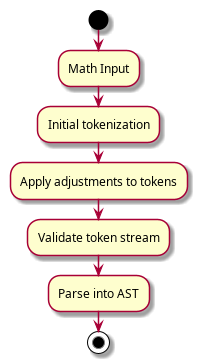
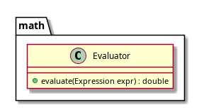
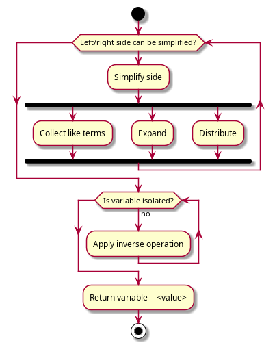

Implementation Notes: runthenumbers.math¶
Note
A basic Python calculator has already been written with tokenization, parsing, and evaluation functionality, thus a large part of the Java implementation is simply a port of the Python code. The solving, quality-of-life, and variable features are new, however.

Expression tokenization¶
The Python implementation was inspired by https://docs.python.org/3/library/re.html#writing-a-tokenizer.
At a high level, the tokenizer splits the input text into its constituent tokens by searching for specific text patterns via regular expressions (regexes). Despite their uncomplicated name, regexes are not trivial.
The summary is that a regular expression is a special matching format. Alphanumeric characters are matched literally. The regex
dogwould only match the stringdogliterally. The power of regex from the extensive syntax available to fine tune the match.Adding a
*after a character allows for zero-to-infinite occurances of that character. A?makes the preceding character optional. Square brackets denote a character range, i.e., select one instance of a set of characters.
dog*would matchdog,doggg, or evendogggggggggggg
dogs?would matchdogordogsbut NOTdogss
dog[a-z]would matchdogA,dogB,dogZ, but notdog0ordogAARound brackets denote groups that must match entirely.
*,?and the many other constructs available can apply to groups as well.To match an integer or decimal number, this (oversimplified) regex could be used:
[0-9]+(\.[0-9]+)?Breaking it down, it will match if:
The string starts with one or more digits (
[0-9]+)The string is terminated OR ends with:
A literal dot (
\.- as an unescaped dot matches any character), followed by one or more digits ([0-9]+)There are many more special regex constructs available, but I don’t want to be here all day explaining them.
For a math expression, tokenization may look like this:
5 * (2 + 2)
| | | and so on...
| | |
| | > Left bracket
| > Operator
> Number
Or in pseudocode:
REGEX = NUMBER_REGEX OR OPERATOR_REGEX OR ...
TokenStream tokenize(String input) {
ArrayList<Token> tokens = []
for (match : regex.search(input)) {
if match.type is "Whitespace"
continue // we don't care about whitespace tokens
else if match.type is "Unknown"
throw MathParseError
tokens <- new token object of type "match.type"
}
return new TokenStream(tokens)
}
As shown in the code, some tokens are special. Whitespace tokens are produced
(so the tokenization doesn’t crash if there is extra whitespace) but they
are thrown away. There is an also a Unknown token type that is produced if
none of the other token patterns match. If an Unknown token is encountered,
raise an error.
The list of tokens are stored within a TokenStream which is a light wrapper
class for ease of use in the parser. Like a read-only file, the stream keeps
track of what token is is under the “read head”. The parser can peek() at
the next token without advancing or the parser can read the next() token
and advance to the next token. Peeking is necessary as parsing may change
depending on what’s the next token (e.g., did we encounter a new left bracket?)
Fix-ups & error handling¶
While the regexes does a good job at chunking the input into the right tokens, adjustments to the token list may be required.
For example, the expression 2-2 will—as numbers are tokenized
first—tokenize to a Number(2) followed by Number(-2).
>>> tokenize("2-2")
[Token(kind='Number', value='2', pos=(0, 1)),
Token(kind='Number', value='-2', pos=(1, 3))]
This is evidently incorrect. The actual token stream should be Number(2),
Operator(-) followed by Number(2).
To allow for a broader range of input (without complicating the already confusing parser), the following adjustments will be performed:
Add a subtraction
Operatorin-between adjacentNumbertokens where the second token is negative.Input: 1-2 Original tokens: Number(1), Number(-2) Fixed tokens: Number(1), Operator(-), Number(2)
Add a multiplication
Operatorin-between adjacent opening and closing brackets.Input: (5)(2) Original tokens: Parenthesis, Number(5), Parenthesis, Parenthesis, Number(2), Parenthesis Fixed tokens: Parenthesis, Number(5), Parenthesis, Operator(*), Parenthesis, Number(2), Parenthesis
Replace pairs of
Number+Variabletokens withNumber,Operator(*), andVariable.Input: 5x Original tokens: Number(5), Variable(x) Fixed tokens: Number(5), Operator(*), Variable(x)
After all fix-ups have been done, if any of the following issues still exist, a parse error will be raised:
Adjacent
NumbersAdjacent
OperatorsImbalanced parenthesises(likely tedious, deferred for later)A
Operatorthat is not followed by aNumber,Variable, or openingParenthesisMultiple
EqualSigns
The post-processing step shall operate vaguely in this way:
# For adjacent-related adjusments.
for index in [0, stream.size):
first = stream[index]
second = stream[index+1]
if (first, second) match (expected, expected2):
stream.insert(index, extra token)
# For multiple equal signs.
if stream.count("=") > 1:
raise ParseError
UML Diagram¶
![@startuml
set separator none
package math.tokenize {
class Span
class Token
class TokenStream
class Tokenizer
}
class Span {
-int start
-int end
+Getters()
+toString() : String
}
class Token {
-String type
-String value
-Span position
+Getters()
+toString() : String
}
Token::position ..> Span : contains
note right of Token::type
**Valid types**: 1) Number
2) Variable
3) Operator
4) EqualSign
5) Whitespace
6) Unknown
end note
class TokenStream {
-ArrayList<Token> tokens
-int index
+Getters()
+peek() : Token
+next() : Token
+isOnLastToken() : boolean
+isExhausted() : boolean
+rollback(int by) : void
+reset() : void
+split(String type) : TokenStream[]
}
class Tokenizer {
+tokenize(String input) : TokenStream
-fixupTokens(ArrayList<Token> tokens) : ArrayList<Token>
}
@enduml](_images/plantuml-6ce2cc7e9f498cea651a762ff8a3f8046f5ad51c.png)
Expression parsing¶
Parsing is the step that turns a list of tokens into a tree (specifically, an abstract syntax tree) that represents the math expression. The tree structure is important so operator precedence and parenthesizes are respected.
I’m not going to even try to explain the algorithm used here. My original Python implementation is (probably, I can’t recall) a direct port of the Pratt parsing algorithm for math expressions described here: https://matklad.github.io/2020/04/13/simple-but-powerful-pratt-parsing.html
The base Java implementation is a port of my Python port, but it has been extended to handle variables and equations (aka the equal sign).
Implementation-wise, there are the root Expression and Parser classes. The
available expressions are represented using sub-classes of Expression.
Expressions can be nested within each other. An Operation expression must
contain two Expression instances (left/right sides) and a string (the
operator).
Extensions to my Python port¶
As stated above, the Java port needs to be extended to include support for variables and equations.
To handle equations, if (the newly added) EqualSign token is found, the
token stream shall be split into two and the two streams are parsed
independently.
def parse(stream: TokenStream):
if stream contains "=":
left_stream, right_stream = stream.split("=")
left_expr = parse(left_stream)
right_expr = parse(right_stream)
return Equation(left_expr, right_expr)
elif stream does not contain "="
# <perform parsing magic>
To handle variables, merely a new Variable token type needs to be added.
See the UML diagram for more information.
UML Diagram¶
![@startuml
set separator none
package math.ast {
class Equation
class Expression
class Number
class Variable
class Operation
class Group
class BindingPower
class Parser
}
class Equation {
-Expression left
-Expression right
+Getters/Setters()
+toString()
}
abstract class Expression {
{abstract} +toString() : String
-Expression parent
+getParent() : Expression
+setParent(Expression parent) : void
}
class Number extends Expression {
-double value
+Getters/Setters()
}
class Variable extends Expression {
-String name
+Getters/Setters()
}
class Operation extends Expression {
-Expression left
-String operator
-Expression right
+Getters/Setters()
}
class Group extends Expression {
-Expression body
+Getters/Setters()
}
-class BindingPower {
-int left
-int right
+Getters()
}
class Parser {
+parse(TokenStream stream) : Expression
-infixBindingPower(String operator) : BindingPower
}
' Parser::parse ..> Expression : returns
Parser ..> BindingPower : uses
@enduml](_images/plantuml-8ed436488f361a6760feff1acab8357f4626326c.png)
Expression evaluation¶
As the parser ensures the AST is constructed in accordance to BEDMAS rules, it is simply a matter of recursively walking the AST, progressively evaluating nodes and their children until numbers are encountered, which allow for their parent nodes to be evaluated.
def evaluate(expr: Expression, variables: dict[str, float]):
if expr is Number:
return expr.value
elif expr is Variable:
return variables[expr.name]
elif expr is Group:
return evaluate(expr.body, variables)
elif expr is Operation:
left = evaluate(expr.left, variables)
right = evaluate(expr.right, variables)
return apply expr.operator to left AND right
UML Diagram¶

Equation solving¶
Important
There are certainly proper/efficient algorithms for solving equations out there, but I wanted to challenge myself to devise one that could handle basic equations. The solving functionality will consequently be quite limited.
UML Diagram¶
![set separator none
package math.solve {
class Solver
class LinearSolver
class QuadraticSolver
class Simplifier
}
abstract class Solver {
{abstract} canSolve(Equation eqn) : boolean
{abstract} solve(Equation eqn) : boolean
}
class LinearSolver extends Solver {}
class QuadraticSolver extends Solver {}
class Simplifier {
+simplify(Expression expr) : Expression
+simplify(Equation eqn) : Equation
-simplifyNode(Expression expr) : Expression
-combineLikeTerms(Expression expr) : void
-findLikeTerms(Expression expr) : ArrayList<Operation>
-distributeTerms(Expression expr) : Expression
}](_images/plantuml-72a590c40fec4b34f3ccd8a897c639ecb70770c1.png)
Final AST Hierarchy UML Diagram¶
I reworked the AST node hierarchy numerous times after designing the above hierarchy. This is approximiately the final product. I hope this helps to understand the spawling codebase.
![abstract class Node {
+{abstract} toString() : String
+{abstract} equals() : boolean
+{abstract} deepcopy() : Node
}
abstract class RootNode implements Node {}
interface ParentNode {}
class Expression extends RootNode implements ParentNode {
-ExprNode body
+Getters/Setters()
}
class Equation extends RootNode implements ParentNode {
-ExprNode left
-ExprNode right
+Getters/Setters()
+replaceSide(ExprNode side, ExprNode replacement) : void
}
abstract class ExprNode implements Node {
-ParentNode parent
+Getters/Setters()
}
class Number extends ExprNode {
-double value
+Getters/Setters
}
class Variable extends ExprNode {
-String name
+Getters/Setters()
}
class Group extends ExprNode implements ParentNode {
-ExprNode body
}
class Operation extends ExprNode implements ParentNode {
-ExprNode left
-String operator
-ExprNode right
+Getters/Setters()
+replaceOperand(ExprNode operand, ExprNode replacement) : void
+is(String... operators) : boolean
}](_images/plantuml-48b4dca80b0f3fcf0618e02efc172046c8cfe6ae.png)
Linear single variable solving¶
To solve linear single variable equations, the calculator needs to be taught a handful of elementary solving techniques. To start, the solver will be able to perform:
Inverse operations
Collection of like terms
Distribution(likely difficult, deferred for later)Expansion(likely difficult, deferred for later)
These actions will be then applied in a loop until the variable is isolated on one side.
For expressions containing brackets, the workaround is to aggressively simplify the expression. Once there are no brackets left, the equation can be solved as described above. If brackets still remain after simplification, then solving those is left as a reach goal.
It’s easier to explain the algorithm using an activity diagram than with pseudocode.

Detour: Simplification¶
To make the solver’s life easier, the equation will be simplified as much as possible. The goal to only have a handful of operations on the side with the variable.
As mentioned earlier, the simplifier should ideally be able to:
Fold operations with constant operands (i.e., a constant answer)
Collect like terms (add/subtract, consecutive multiplication)
Distribute a term over brackets
Expansion(likely difficult, deferred for later)
The first two parts of the simplification logic will broadly look like this:
def simplify_node(expr: Expression):
# Returns a simplified version of expr if possible.
# Walk expression AST recursively for operations that contains
# constant operands. Matching operations are replaced with
# number nodes.
if expr is Operation:
simplify operation.left
simplify operation.right
if expr contains only constant operands:
# Replace this expression with a number node.
return Number(evaluate(expr))
elif expr is Group
simplify group.body
if group.body is Number OR Variable:
# Eliminate the group as it simplifies down to a constant.
return group.body
combine_like_terms(expr)
return expr
def combine_like_terms(expr: Expression):
if expr is Group:
# We're combining terms within brackets, but we don't care
# about the brackets specifically.
expr = expr.body
# Addition/subtraction are associative, thus we can collect and
# fold their constant operands into a single Number.
like_terms = find_like_terms(expr)
first_number = get_number_node of like_terms[0]
for term_operation in like_terms:
number_node = get_number_node of term_operation
first_number.value += number_node.value
number_node.removeFromAST()
def find_like_terms(expr: Expression):
# Look for operations which have one constant operand.
add_subtract_terms = []
if expr is Operation and expr.operation is ADD or SUB:
add_subtract_terms += find_like_terms of expr.left AND expr.right
add_subtract_terms.append(expr constant operand)
elif expr is Group
# Within brackets, thus terms cannot be combined so don't
# even look for candidate terms.
return []
Detour: AST modification tooling¶
def replaceNode(original: ExprNode, replacement: ExprNode):
"""
Replace a expression node in the AST with a new node.
The replaced node must be a child node.
"""
replacement.parent = original
if origin.parent is (Group or Expression):
origin.parent.body = replacement
elif origin.parent is (Operation, Equation):
if original is original.parent.left:
origin.parent.left = replacement
else:
origin.parent.right = replacement
def removeNode(node: ExprNode):
parent = node.parent
if parent is Equation:
# replace the target equation side with Number(0)
elif parent is Expression:
parent.body = Number(0)
elif parent is Group:
# The parent group will be empty so remove it outright.
removeNode(parent)
elif parent is Operation:
is_left_operand = (node is parent.left)
if is_left_operand:
if parent.operator is (ADD or MULTIPLY):
# They're associative so it's safe to replace the
# parent operation with its right operand.
replaceNode(parent, parent.right)
elif parent.operator is SUBTRACT:
# The right operand needs to remain negative, so
# update the operation to multiply the RHS by -1.
replaceNode(node, Number(-1))
parent.operator = MULTIPLY
else:
raise Exception(
"removing LHS of division is unsupported")
else:
# The RHS of any operation can be easily removed.
replaceNode(parent, parent.left)
Back to linear solving¶
def canSolve(expr: Expression):
if expr.countVariables() == 0 or expr.countVariables() >= 2:
return False
# walk AST and keep track of the highest degree variable
highestDegree = 0
walkAST(node) {
if (
node is Operation
node.operator is "^"
and node.left is Variable
and node.right is Number
and node.right > highestDegree
):
highestDegree = node.right
walkAST(node.children)
}(expr)
if highestDegree > 1:
return False
if expr.left.containsVariable() and expr.right.containsVariable():
return False
return True
def solve(eqn: Equation):
# This assumes the variable term will always be on the left side.
while (eqn.left is not Variable):
# Apply inverse operation
eqn.left
if eqn.left.operator is ADD or SUBTRACT:
inverseValue = -getConstantValue(eqn.left)
if (
eqn.left.operator is SUBTRACT
and inverseValue is LEFT of eqn.left
):
# Constant operand is really negative, so change the
# inverse value back to positive.
inverseValue *= -1
eqn.right += inverseValue
elif eqn.left.operator is MULTIPLY:
inverseValue = getConstantValue(eqn.left)
eqn.right /= inverseValue
elif eqn.left.operator is DIVIDE:
# Assume that we aren't dividing by a variable.
if (eqn.left.right is Variable): raise Error()
inverseValue = eqn.left.right
eqn.right *= inverseValue
# The variable is isolated on the left, we're done! 🎉
return eqn.right
Quadratic single variable solving¶
TBD.